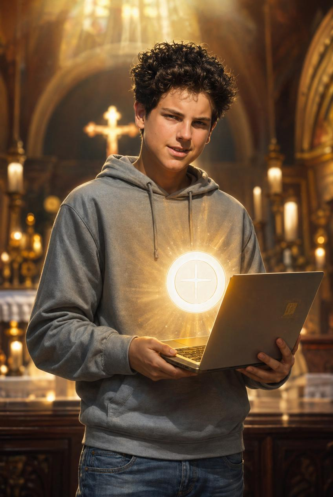

Feast Day · October 12
Patron of the Internet, and the newest saint in the whole Church.
Meet Carlo
Carlo loved video games. He loved building websites. He wore jeans and sneakers, not fancy robes. He was a totally normal kid who did his homework and hung out with friends. And in September 2025, the Church declared him a saint. If Carlo can become a saint, so can you.
Growing Up
Carlo was born in London in 1991 to Italian parents, then grew up in Milan, Italy. He had a happy, ordinary childhood. He played soccer, took care of his pets, and loved animals. He was funny, kind to classmates who got left out, and already, even as a little kid, he loved to pray.
His Favorite Thing
Starting around age seven, Carlo went to Mass every single day. He wasn't forced to. He wanted to. He said the Eucharist, Jesus truly present in Holy Communion, was his "highway to heaven." Think of it like his favorite way to feel close to God, every single day, no matter what.
His Other Favorite Thing
Carlo taught himself to code before most kids even had a computer at home. He built websites for fun, the way some kids build with Legos. But Carlo didn't just want to make cool stuff. He wanted to use his skills for something bigger than himself.
His Biggest Project
His exhibit has now traveled to churches and schools all over the world, all because one kid decided his computer could be used to help people love God.
A Hard Chapter
When Carlo was 15, doctors found that he had leukemia, a serious illness in the blood. It was scary and it was hard. But Carlo faced it with incredible courage and trust in God. He offered up his suffering as a prayer, for the Pope and for the whole Church, saying he wanted his pain to be used for good instead of wasted.
October 12, 2006
Carlo died just three days after he first got sick. He was only 15 years old. Before he died, he told his family not to be afraid, because he was going straight to God. That's why the Church remembers him every year on October 12, the day he went home to heaven.
Becoming a Saint
In 2020, the Church declared Carlo "Blessed," the step right before sainthood. Then on September 7, 2025, Pope Leo XIV declared him a saint in St. Peter's Square in Rome, in front of thousands of people. Carlo became the Church's first millennial saint, the first saint from the generation that grew up online.
Why It Matters
Carlo shows us that you don't need to be an adult, or a priest, or a nun, to become close to God. You just need to say yes with whatever you've got, even a laptop.
In His Own Words
"All people are born as originals, but many die as photocopies."
— St. Carlo Acutis
Carlo meant that God made you one of a kind, on purpose. Don't spend your life just copying everyone else. Be exactly who God made you to be.
Remember This
St. Carlo Acutis, pray for us, that we'd love Jesus as much as you did, and use whatever we've got for something bigger than ourselves.